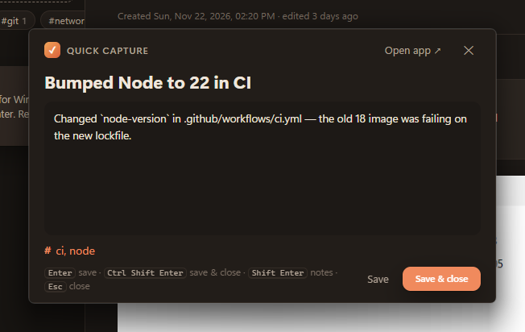
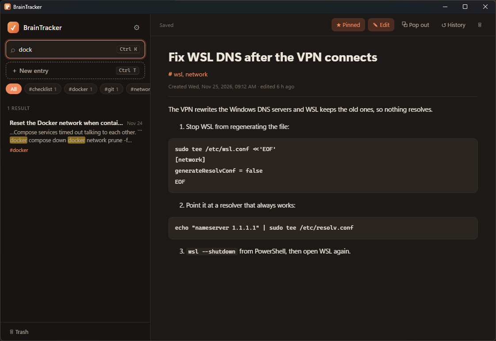
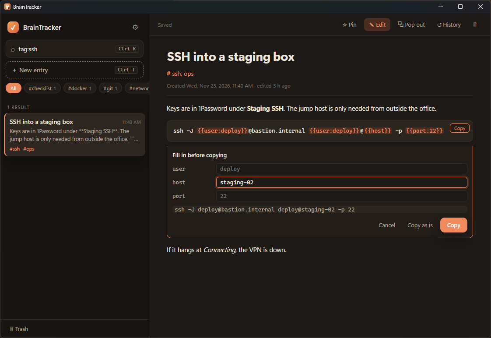
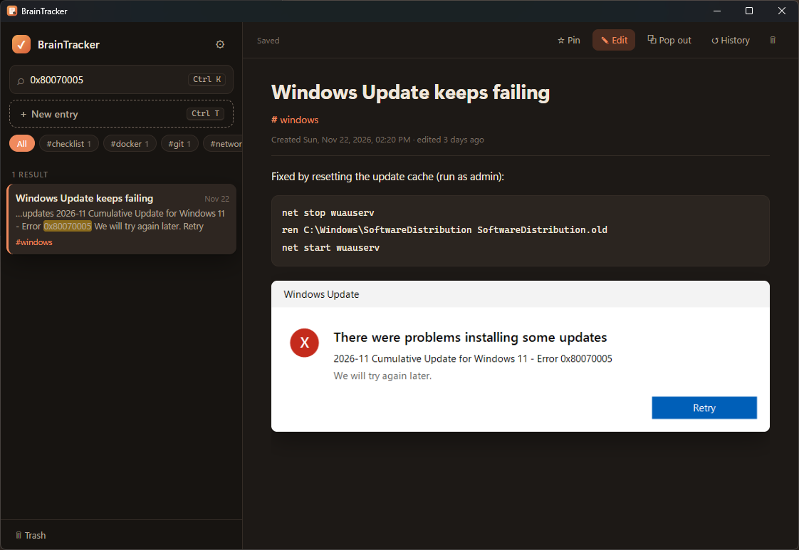
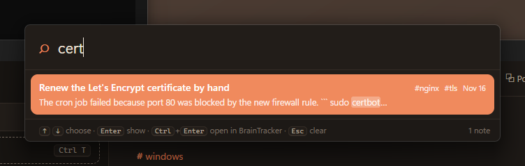

Pop out a note
Open a note in a small window that stays on top of other apps, to follow its steps while you work.
A tiny, fast, offline-first app for jotting down what you just did: the fix, the command, the setting you changed, the screenshot that explains it. Write it in seconds. Find it again in seconds.
You remember fixing it, but not how. BrainTracker is for that moment: a place to drop the details you'd otherwise forget, so you never have to work them out twice.
Think of it as a memory you can search, not a library you keep tidy. Write a few lines while it's fresh, add a tag if you feel like it, and move on.
Lives in the system tray, starts with Windows, and opens with a shortcut wherever you are.
Press Ctrl Shift E in any app and a small popup appears on top. Type what you did, hit Enter, done.

Full-text search across titles, notes and tags, with matches highlighted. Partial words match, so dock finds Docker.
tag:docker, has:image or after:2026-10
Every code block has a one-click Copy button. Write blanks into a command, like ssh {{user}}@{{host}} -p {{port:22}}, and Copy asks for the values first.
It remembers what you typed, so next time it's just Enter.

Paste a screenshot straight into a note with Ctrl V. BrainTracker reads the text in it with Windows' built-in OCR, on your PC, so searching an error code finds the screenshot of that error.
Nothing is uploaded anywhere.

Press Ctrl Alt Space anywhere for a Spotlight-style bar that shows your notes as you type.
Staring at an error? Select it and press Ctrl Alt Shift Space to search for it. If no note has every word, you get the closest matches.

Open a note in a small window that stays on top of other apps, to follow its steps while you work.
One switch and BrainTracker makes no network connections at all: no update checks, no web images, no sync.
A daily snapshot whenever something changed, to Documents, OneDrive or any folder. Restore any of them in one click.
Deleted notes wait in the Trash for 30 days, and every note keeps an edit history you can step back through.
Import folders of Markdown or text, or watch an inbox folder. Export everything to plain Markdown anytime.
New versions install with one click from the sidebar. Your notes and settings carry over.
The Android app keeps a full copy of your notes, and you can write and edit there too. There's no BrainTracker server: the phone talks directly to your PC.
Every shortcut can be changed in Settings, and they follow the physical key, so they work on any keyboard layout.
These work wherever you are, even with BrainTracker hidden in the tray.
| Show / hide BrainTracker | Ctrl Shift Space |
| Quick capture | Ctrl Shift E |
| Capture the selected text | Ctrl Shift D |
| Quick search | Ctrl Alt Space |
| Search the selected text | Ctrl Alt Shift Space |
The bt command works straight on your notes, so you can script it.
> bt search docker dns > bt add "Fixed DNS in WSL" --tags wsl,network \ --body "Set nameserver 1.1.1.1" > git log -1 | bt add "Today's release" --body - > bt show 12 > bt list --json # for scripts > bt search --open # or do it in the app
No sign-up. Your notes stay in one local file you can export to Markdown anytime.
For everyday use. Adds a Start menu entry, launches at startup and updates itself. No admin rights needed.
Download installerNo install. Unzip it anywhere, even a USB stick, and your data stays inside the folder.
Download zipYour notes on your phone, synced with the PC. Download it on the phone and open the file to install.
Download APK